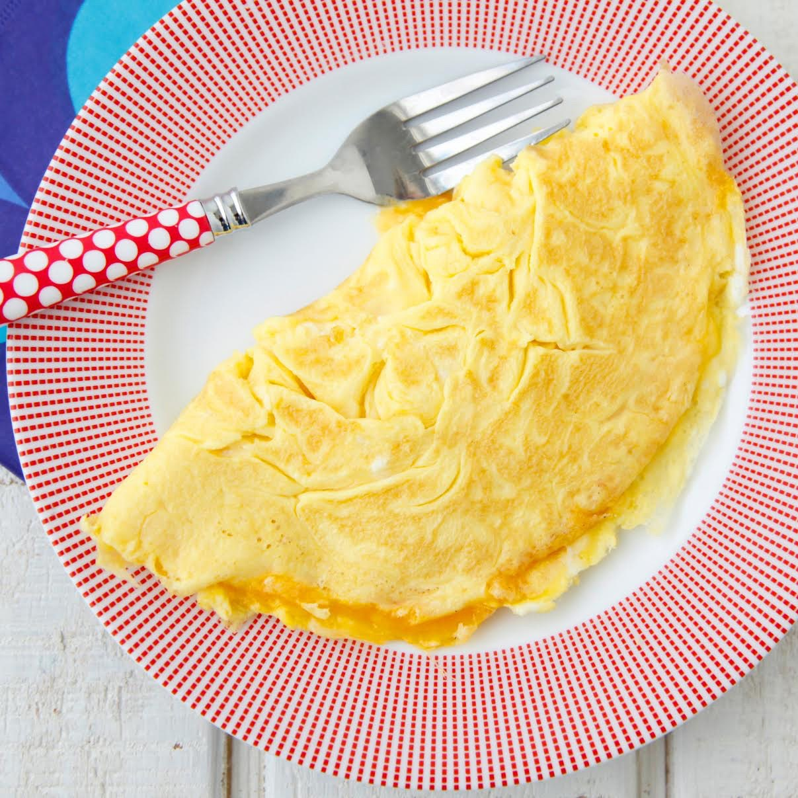

Recipe: Omelette
Description
As my personal favourite egg-based recipe for breakfast, omelettes are quick, simple and tasty.
Omelette or omelet is a dish made from beaten eggs, fried with butter or oil in a frying pan.
It is quite common for the omelette to be folded around fillings such as chives, vegetables,
mushrooms, meat, cheese, or some combination of the above. This recipe will not include fillings,
but feel free to add them to your liking.
Ingredients
- 2x Egg
- butter
- Salt
- Pepper
- (Optional) Olive oil
Steps
- Heat a frying pan on low-medium heat
- In a Bowl, crack the eggs, adding salt and a small amount of butter
- With a fork, beat the eggs until homogenous texture
- Add butter (or olive oil) onto the pan, pouring the eggs onto the pan
- Lean the frying pan, cooking the excess egg
- After achieving desired texture, fold the omelette into a semicircle
(If you want toppings, add them on one half of the omelette prior to folding)
- Serve on a plate, add pepper to your liking. Some toast and leafy greens may be added